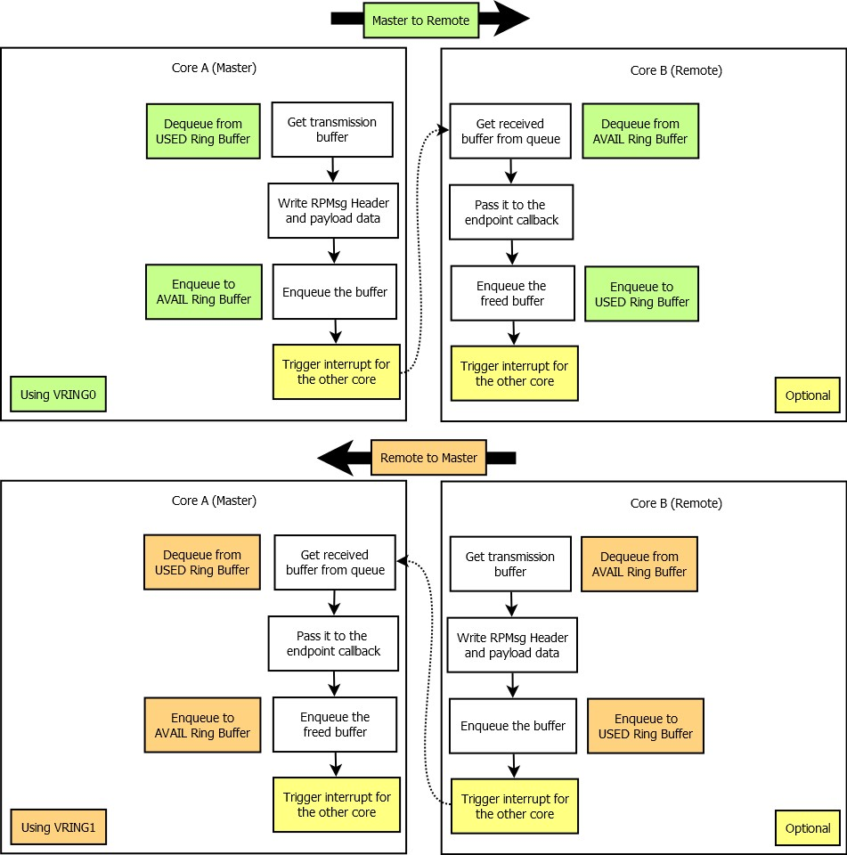

RPMsg Communication Flow
The following figure describes the sequence used for transaction of a RPMsg message from one core to the other. The sequence differs according to the roles of core A and core B. In the figure above, core A is the Master and core B is the Remote. The Master core allocates buffers used for the transmission from the “used” ring buffer of a vring, writes RPMsg Header and application payload to it and then enqueues it to the “avail” ring buffer.
The Remote core gets the received RPMsg buffer from the “avail” ring buffer, processes it and then returns it back to the “used” ring buffer. When the Remote core is sending a message to the Master core, “avail” and “used” ring buffers role are swapped.
The reason for swapping the roles of the ring buffers comes from the fact, that the Master core works as a Buffer Provider. The Buffer Provider has a complete control of memory management and shared memory allocation. Obviously, when the Master core, or Buffer Provider, does not fill the “avail” ring buffer of VRING1 (Orange), the Remote core is unable to send a message to the master. This can be used to throttle the communication generated by the Remote core. It is to be noticed, that the master always dequeues from the “used” ring buffer and enqueues to the “avail” ring buffer. For the remote, the situation is inverse. The triggering of interrupts is optional. It is governed by the flags in “used” and “avail” ring buffers.